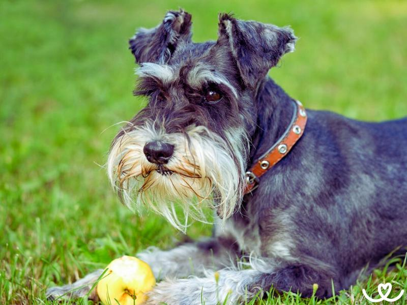
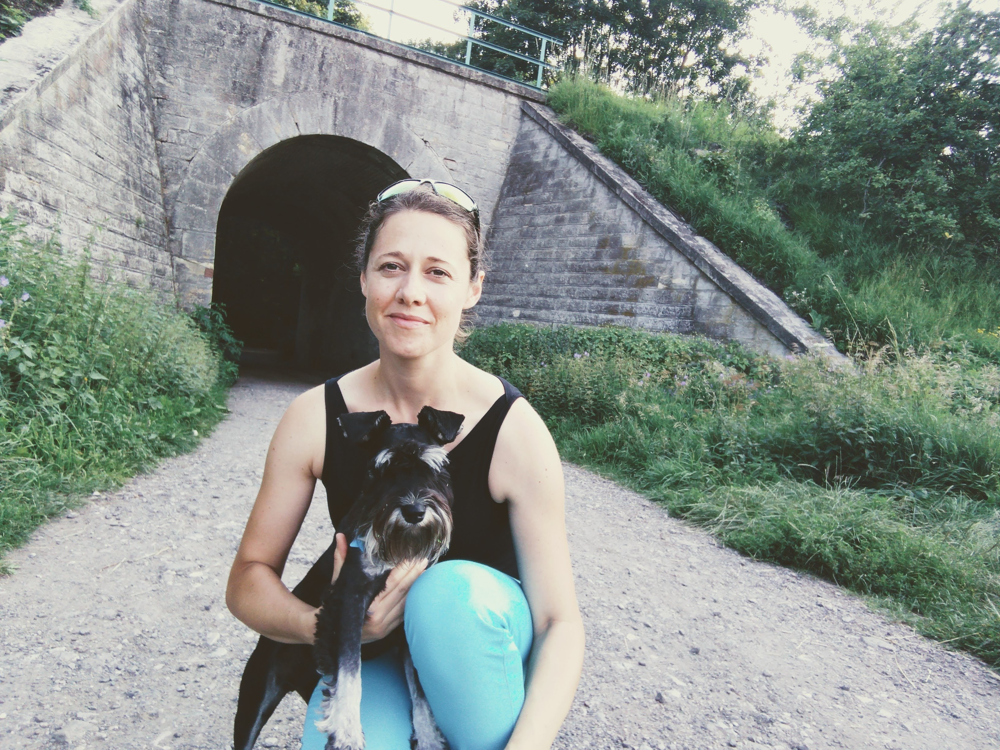

Historie
Malý knírač vznikl koncem 19. století v německém Frankfurtu nad Mohanem, cíleným křížením středního knírače (nejpůvodnější
velikostní ráz) s trpasličími pinči. Ustálení značně různorodých typů srsti, fyzické konstituce a především povahy malých
hrubosrstých pinčů tak, aby byl výsledek exteriérem i vlohami téměř dokonalou zmenšeninou středního knírače, stálo mnoho
šlechtitelského úsilí. Blízce příbuzní pinčové hráli významnou roli při vzniku všech kníračů, ostatně starší název knírače
zní „stájový pinč“ a odkazuje tak na jeho původní zaměstnání - chránit před krysami hospodářské budovy a obytná stavení.
Malý knírač byl až do roku 1917 známý pod názvem „drsnosrstý trpasličí pinč“ a jeho chov byl doménou několika nadšenců.
Vzestupu popularity a rozšíření do celého světa se malý knírač dočkal až po druhé světové válce.
Vzhled

Asi 35 cm vysoký pejsek na první pohled zaujme svým typickým “knírem”, podle kterého je ostatně také pojmenován. Tento hustý
vous na mohutném čenichu je navíc doplněn dopředu sklopenýma ušima a dodává mu tak typický výraz, který si rychle zapamatujete.
Knírač se v davu zkrátka neztratí.
Knírač malý má malou, ale pevnou a dobře osvalenou postavu a krátký, nahoru stočený ocas. Standard plemene popisuje jeho
tělo jako čtvercový formát s horní linií lehce spadající dozadu. Hřbet má krátký a pevný, bedra hluboká a hrudník široký.
Celkový dojem by měl být vyvážený a kompaktně vyhlížející pes připravený na spoustu pohybu.
Nejmenší varianta knírače se objevuje v různých barvách své drsné a hrubé srsti – v černé, stříbřitě černé, bílé
nebo takzvané pepř a sůl variantě.
Povaha
Oproti teriérům, které svým zjevem připomíná, je o něco klidnější a také tvárnější. Na svou velikost je ostrý hlídač,
k cizím lidem se chová rezervovaně a nějakou dobu trvá, než si ho získáte.
K dětem bývá kamarádský, rád si s nimi hraje, ale je důležité, aby respektovaly jeho osobní prostor a nechaly ho také
odpočívat. Malý knírač má silný lovecký pud zejména vůči drobným živočichům. Rád hrabe, což může představovat problém
pro majitele pečlivě udržovaného trávníku.
10 důvodů, proč si pořídit knírače malého

- I když je malý vzrůstem, překvapí svou pracovitostí, energií, elánem i výdrží. Ideální pes na jakoukoliv aktivitu.
- Rychle se učí, protože je inteligentní a snadno pochopí požadované povely.
- Knírač malý je spolehlivým hlídačem a alarmem – na vše nepatřičné bude zodpovědně reagovat hlasitým štěkáním.
- Jeho povahu ocení nejen zájemci o psí sporty, ale také rodiny – je přítulný, mazlivý a skvělý rodinný společník.
- Není dominantní ani agresivní, s ostatními psy se snáší bez problému.
- Svému pánovi je oddaný a citově se k němu úzce připoutá.
- S dostatkem pohybu se přizpůsobí vašemu stylu života, chov v bytě pro něj nebude problém.
- Jedná se o zdravé plemeno bez velkých obtíží.
- Se svou povahou se hodí i pro začátečníky.
- Při pravidelném trimování malý knírač nelíná.

O mně
Téma jsem si zvolila, protože doma mám malého knírače a je to skvělý společník do pohody i nepohody.
Poslušný, inteligentní, hodný i mazlivý.
LinkedIn